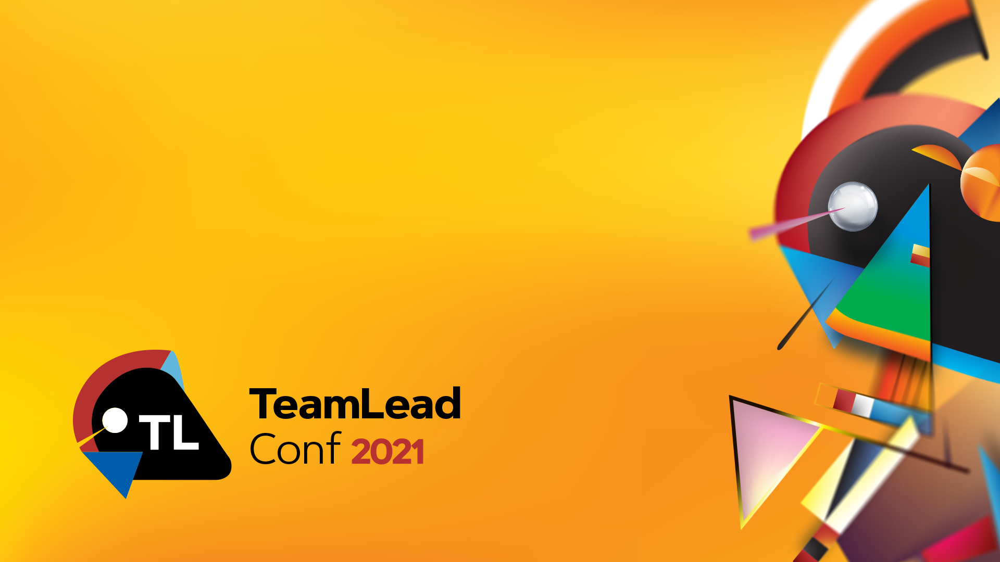
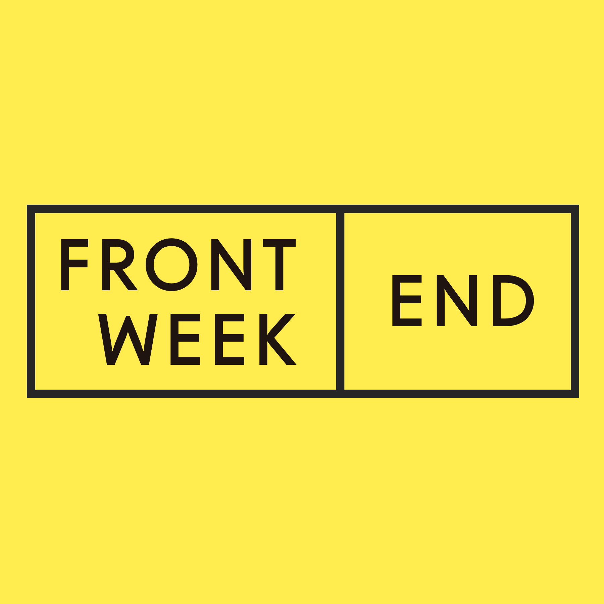
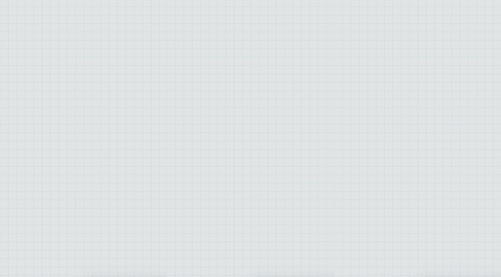

Teamlead

Андрей Смирнов


junior_importance = jun - mid - sen - tl - no_need
middle_importance = jun + mid - sen - tl - no_need
senior_importance = jun + mid + sen - tl - no_need
teamlead_importance = jun + mid + sen + tl - no_need

Андрей Смирнов (@frontendweekend)